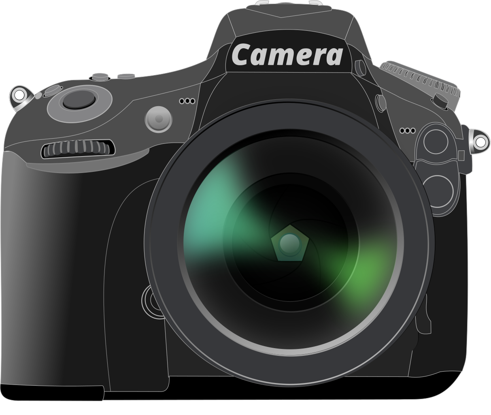
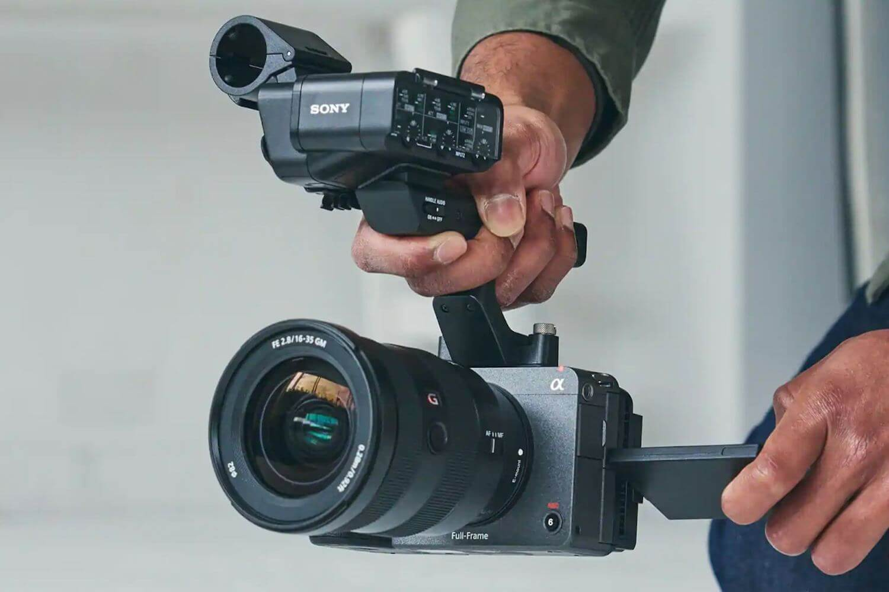

<!DOCTYPE html>
<html lang="en">
<head>
    <meta charset="UTF-8">
    <meta name="viewport" content="width=device-width, initial-scale=1.0">
    <title>Document</title>
</head>
<body>
    
</body>
</html>

<!doctype html>
<html lang="en">

<head>
    <meta charset="UTF-8">
    <meta name="viewport"
        content="width=device-width, user-scalable=no, initial-scale=1.0, maximum-scale=1.0, minimum-scale=1.0">
    <meta http-equiv="X-UA-Compatible" content="ie=edge">
    <title>Sony ILME-FX3</title>
    <link rel="stylesheet" href="css/style.css">
</head>

<body>

<!-- Navigatie -->
<div id="container">
    <nav>
        
        <a href="#beschrijving">Prijs</a>
        <a href="#omschrijving">Omschrijving</a>
        <a href="#gerelateerd">Gerelateerde producten</a>

    </nav>

    <!-- Eerste pagina -->
    <main>
        <section>
            <h2 class="sony">Sony ILME-FX3</h2>
            <div class="article-container">
                <article>
                    <div class="left-column">
                        
                </article>
                <article>
                    <div id="beschrijving">
                        <h3>€4.700,00</h3>
                        <p>Korte beschrijving: De Sony FX3 is een compacte, krachtige digitale filmcamera ontworpen voor professionals. Het beschikt over een full-frame sensor voor uitstekende prestaties bij weinig licht, neemt 4K-video op met maximaal 120 fps en heeft ingebouwde beeldstabilisatie. Met geavanceerde autofocus, XLR-audio-ingangen en een duurzame behuizing is het ideaal voor verschillende videoproductietaken, van filmmaken tot vloggen.
                            </p>
                        <a href="#" class="button-default">Bestellen</a>
                    </div>
                </article>
            </div>
    </main>


    <!-- Tweede pagina -->
    <main class="second-page">
        <section>

            <div id="second-container">
                    <div id="voor-na">
                        <h3>Plus- en minpunten</h3>
                        <p class="vn">✔ Uitstekende Beeldkwaliteit</p>
                        <p class="vn">✔ Ingebouwde Beeldstabilisatie</p>
                        <p class="vn">✔ Geavanceerde Autofocus</p>
                        <p class="vn">✘ Dure prijs</p>
                    </div>

                <article>
                    <div id="omschrijving">
                        <h3>Omschrijving</h3>
                            <p>De Sony FX3 is een compacte en veelzijdige digitale filmcamera die is ontworpen voor professionele filmmakers en videografen. Uitgebracht begin 2021, vertegenwoordigt het een unieke mix van functies van de Alpha mirrorless-camera's van Sony en hun Cinema Line, en biedt uitzonderlijke videoprestaties in een compacte vormfactor.</p>
                            <p>Belangrijke kenmerken en eigenschappen van de Sony FX3 zijn onder andere:</p>

                            <p>Full-Frame Sensor: De FX3 heeft een full-frame 35,9 x 24,0 mm Exmor R CMOS-sensor, wat zorgt voor uitstekende prestaties bij weinig licht en de mogelijkheid om cinematische beelden met een geringe scherptediepte vast te leggen.</p>
                            <p>Hoogwaardige Video: Hij kan 4K-video opnemen met maximaal 120 frames per seconde (fps) en een kleurdiepte van 10-bits 4:2:2. Bovendien ondersteunt hij 16-bits RAW-uitvoer via HDMI voor nog meer flexibiliteit in de postproductie.</p>
                            <p>Ingebouwde Beeldstabilisatie: De camera beschikt over in-body beeldstabilisatie (IBIS) om cameratrillingen te verminderen en ervoor te zorgen dat de opnames soepel en stabiel zijn, zelfs zonder een gimbal of stabilisator.</p>
                            <p>Compact Ontwerp: De FX3 is relatief klein en licht van gewicht, waardoor hij ideaal is voor handheld of gimbalgemonteerde opnames. Hij is ontworpen met een comfortabele grip, zodat hij gemakkelijk te hanteren is gedurende lange periodes.</p>
                            <p>XLR-audio-ingangen: Voor professionele audioregistratie heeft de FX3 twee XLR/TRS-combo-aansluitingen, waarmee je externe microfoons en andere audioapparatuur rechtstreeks op de camera kunt aansluiten.</p>
                            <p>Dubbele Kaartsleuven: De camera ondersteunt dubbele kaartsleuven voor SD UHS-II en CFexpress Type A-geheugenkaarten, waardoor er redundante opslagruimte en voldoende opslagruimte is voor hoogwaardige videobestanden.</p>
                            <p>Snelle Autofocus: Met behulp van de geavanceerde autofocus-technologie van Sony beschikt de FX3 over snelle en nauwkeurige autofocus, inclusief Real-time Eye-autofocus voor zowel mensen als dieren.</p>
                            <p>Veelzijdige Lensvatting: Hij wordt geleverd met een Sony E-vatting, die compatibel is met een breed scala aan Sony- en third-party-lenzen, wat flexibiliteit biedt bij het kiezen van de juiste lens voor je project.</p>
                            <p>Professionele Connectiviteit: De camera heeft HDMI- en USB-C-poorten voor externe monitoring, opname en gegevensoverdracht. Hij heeft ook een 3,5 mm koptelefoonaansluiting voor audiobewaking.</p>
                            <p>Duurzaamheid: De FX3 is gebouwd om de eisen van professioneel gebruik te weerstaan, met een duurzame behuizing van magnesiumlegering en bescherming tegen stof en vocht.</p>
                            <p>Touchscreen-LCD: De camera heeft een 3-inch touchscreen-LCD voor intuïtieve menu-navigatie en live-weergave.</p>
                            <p>Aanpasbare Knoppen: Gebruikers kunnen verschillende knoppen en bedieningselementen op de camera aanpassen aan hun opnamevoorkeuren en workflow.</p>
                            <p>De Sony FX3 is ontworpen om de kloof te overbruggen tussen de populaire Alpha mirrorless-camera's van Sony en hun speciale filmcamera's. Dankzij zijn compacte formaat, uitstekende videomogelijkheden en veelzijdige functies is hij zeer geschikt voor een breed scala aan videoproductietoepassingen, van documentaires en onafhankelijke films tot commerciële opnames en vlogging.</p>
                    </div>
                </article>
            </div>
        </section>
    </main>

    <section id="gerelateerd">
        <h2>Gerelateerde Producten</h2>
        <div id="gerelcontainer">
            <div class="gerel">
                
                <a
                    href="https://fujifilm-x.com/nl-nl/products/cameras/gfx100s/">Fujifilm GFX100S</a>
                <p>De Fujifilm GFX100S is een geavanceerde medium-formaat camera met 102-megapixel sensor, geavanceerde autofocus, 
                   en beeldstabilisatie, ontworpen voor professionele fotografie met uitstekende beeldkwaliteit in een compacte behuizing.
                </p>
            </div>

            <div class="gerel">
                
                <a href="https://www.canon.nl/cameras/eos-r3/">Canon EOS-R3</a>
                <p>
                    De Canon EOS R3 is een high-end spiegelloze full-frame camera voor professionele fotografen, 
                    met snelle prestaties en geavanceerde autofocus, ideaal voor actie- en videografie.
                </p>
            </div>

            <div class="gerel">
                
                <a href="https://www.nikon.nl/nl_NL/product/cameras/z-9">Nikon Z9</a>
                <p>
                    De Nikon Z9 is een toonaangevende spiegelloze camera met indrukwekkende snelheid, 
                    autofocus en video-opnamemogelijkheden, ontworpen voor professioneel gebruik.
                </p>
            </div>
        </div>
    </section>
</main>


    <!-- Footer -->
    <footer id="onder">
        <a>Privacy</a>
        <a>Terms & Conditions</a>
        <a>Cookie Policy</a>
        <a>Contact</a>
    </footer>
</div>
</body>

</html>